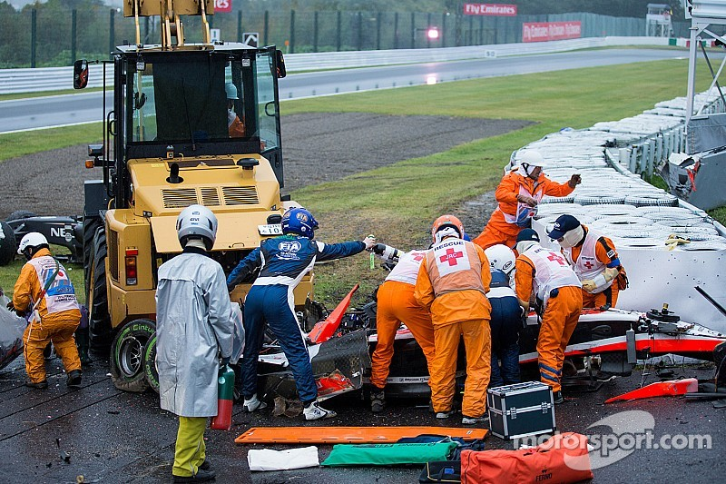

During races lasting approximately one and a half to two hours, drivers are exposed to significant amounts of heat and humidity. Therefore, weight and fluid loss is experienced throughout the race, which amounts to around 2 to 3 kilograms of loss.That's why they drink plenty of water before the race starts.
Even though Formula 1 drivers might appear to be just driving cars, they are actually among the athletes who experience the most training in the world. Because of the downforce of the cars, the pilots are exposed to 5G force. Strength and durability are key to F1 . Therefore pilots are tested frequently and always train to stay at a certain weight and muscle level.
Not.The fact that these vehicles are not the fastest cars has two simple reasons.The first of these is that the primary purpose of Formula 1 cars is to be designed for setting the fastest lap times on tracks, not to reach the highest speeds. "In Formula 1, the cornering speeds of cars and how quickly they can accelerate after these corners are more important than being fast. The second reason is the fact that Formula 1 cars are constructed under specific regulations.The engine of a Formula 1 car is approximately 1000 hpThe car can reach a speed of 345 km / h per hour.
Even though Formula 1 has advanced technology and high-level safety systems, there is still a risk of accidents. Throughout F1 history, many drivers have been involved in accidents, and some of them even lost their lives. What are the worst accidents in the history of Formula 1?
Ayrton Senna, one of the greatest Formula 1 drivers in history, crashed into a barrier at a speed of 200 km/h and his car shattered into pieces. Following the accident, the F1 pilot suffered a brain hemorrhage and lost his life.
Due to heavy rain during the 2014 Japanese Grand Prix, the track became slippery. In the second lap, the driver lost control of the car and crashed with the recovery crane that came to rescue. Jules Bianchi lost his life at the young age of 25 due to serious injuries.
During the 2020 Bahrain Grand Prix, Romain Grosjean crashed into the barriers with a strong impact. As the car burst into flames, the pilot's survival seemed like a miracle. What saved the driver's life was the safety system called 'Halo'. This system protects the driver's head during the moment of impact and enables them to exit the cockpit.
The Halo system is a collision protection system consisting of a curved bar installed to protect the driver's head Halo became mandatory in races by the FIA starting from 2018. The coma and subsequent death of Jules Bianchi in Formula 1's last fatal accident in 2014 played a significant role in making the Halo mandatory.